suivant:
La fonction sinus integral
monter:
Les réels
précédent:
La fonction exponentielle integrale
Table des matières
Index
La fonction cosinus integral
Ci
:
Ci
Ci
a comme argument un nombre complexe
a
.
Ci
calcule les valeurs de la fonction
Ci
au point
a
.
On a par définition :
Ci
(
x
) = 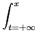
dt
= ln(
x
) + + 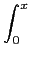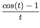
dt
On a :
Ci
(0) = -
,
Ci
(-
) =
i
,
Ci
(+
) = 0. Lorsque l'on est proche de
x
= 0 on sait que
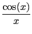 =
- 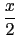 + 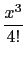 + ... + (- 1)
n
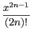....
ce qui donne par intégration le développement en séries de Ci.
On tape :
Ci(1.)
On obtient :
0.337403922901
On tape :
Ci(-1.)
On obtient :
0.337403922901+3.14159265359*i
On tape :
Ci(1.)-Ci(-1.)
On obtient :
-3.14159265359*i
On tape :
int((cos(x)-1)/x,x=-1..1.)
On obtient :
-3.14159265359*i
Documentation de
giac
écrite par Renée De Graeve
 dt = ln(x) + + 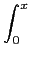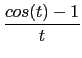 dt
dt = ln(x) + + 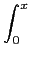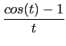 dt